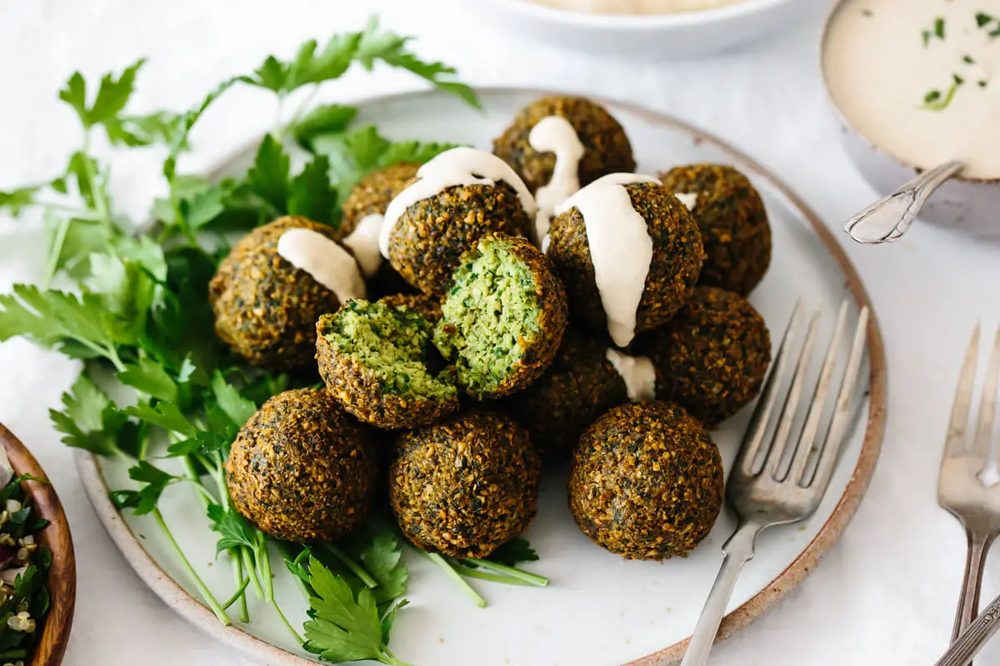

Falafel Recipe

Recipe Ingredients
- Baking Soda
- Oil for Frying
- Chickpeas
- Onion
- Parsley
- Cilantro
- Garlic
- Green Chile Pepper
- Cumin, Cardamom, Salt and Black Pepper
- Chickpea Flour
Instructions
-
Soak your dried chickpeas: Overnight or for at least 8-12 hours.
Note that the chickpeas will triple in size, so cover them with
plenty of water. Then drain and rinse them.
-
Add all the ingredients to a food processor: Add the chickpeas,
onion, parsley, cilantro, garlic, green pepper and spices to a
food processor. I recommend roughly chopping up the onion, herbs
and pepper before adding. Pulse the food processor but do not
blend completely. The final mixture should resemble coarse sand.
-
Transfer the mixture to a bowl: Then add the chickpea flour and
baking soda, stir it together until it's fully combined and
cover with plastic wrap or a lid.
-
Place the bowl in the fridge: Chill the falafel mixture for 30
minutes to 1 hour.
-
Shape your falafel: You can do this by hand, with a cookie scoop
(which is what I use) or a falafel scoop. Decide if you'd like
round balls or flatter patty shapes. The flatter shapes are
better if you plan to pan fry or bake. Any shape can be used for
deep frying. Form all your falafel and place on a plate.
Top
Return to Main Menu